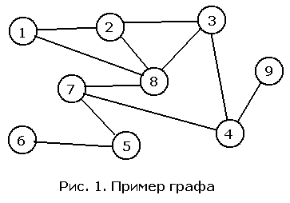

Графы: разные виды представления графов. Алгоритмы Дейкстры и Флойда: реализация на Python. Минимальное остовное дерево
Раскрашивание графов
Раскраска вершин графа $G = (V, E)$ — это назначение каждой вершине цвета так, что любые две смежные вершины (соединённые ребром) получают разные цвета. Наименьшее число цветов, при котором раскраска возможна, называется хроматическим числом графа и обозначается $\chi(G)$.
Жадный алгоритм строит раскраску быстро, но не всегда в наименьшее возможное число цветов. Ниже рассматриваются жадная раскраска в заданном порядке и проверка двудольности с помощью раскраски в два цвета обходом в ширину.
Жадная раскраска в заданном порядке
Пусть вершины заданы в порядке $v_1, v_2, \dots, v_n$. Алгоритм обрабатывает вершины по очереди: каждой вершине присваивается наименьший номер цвета (1, 2, 3, …), не использованный её уже раскрашенными соседями.
- Все вершины не раскрашены.
- Для $i = 1, 2, \dots, n$ вершине $v_i$ присваивается наименьший цвет $c \ge 1$, не совпадающий с цветами тех соседей вершины $v_i$, которые уже раскрашены.
Оценка числа цветов. При любом порядке вершин жадная раскраска использует не более $\Delta(G) + 1$ цветов, где $\Delta(G)$ — максимальная степень вершины графа. Действительно, когда вершина $v$ получает цвет, у неё $\deg v \le \Delta(G)$ соседей, и они занимают не более $\Delta(G)$ цветов. Среди цветов $1, 2, \dots, \Delta(G) + 1$ хотя бы один свободен, поэтому выбранный цвет не превосходит $\Delta(G) + 1$. Если $k$ — число цветов, которое использовала жадная раскраска, то
$$\chi(G) \le k \le \Delta(G) + 1,$$
где левое неравенство выполняется, потому что жадная раскраска — правильная раскраска в $k$ цветов.
Результат зависит от порядка. Возьмём путь $1 - 2 - 3 - 4$ с рёбрами $\{1, 2\}$, $\{2, 3\}$, $\{3, 4\}$. В порядке $1, 2, 3, 4$ жадный алгоритм даёт цвета $1, 2, 1, 2$, то есть два цвета, что оптимально. В порядке $1, 4, 3, 2$ вершины 1 и 4 не смежны, поэтому обе получают цвет 1; вершина 3 смежна с 4 и получает цвет 2; вершина 2 смежна с 1 и 3 и получает цвет 3. Итого три цвета при $\chi(G) = 2$.
Проверка двудольности: раскраска в два цвета обходом в ширину
Граф называется двудольным, если его вершины можно раскрасить в два цвета так, что каждое ребро соединяет вершины разных цветов. Например, цикл из 6 вершин двудольный, а граф с треугольником — нет.
Алгоритм использует обход в ширину, описанный ниже, в разделе «Поиск в ширину», и красит вершины так, что каждая вершина, открытая из вершины $v$, получает цвет, противоположный цвету $v$:
- Пока есть непокрашенная вершина $s$, покрасить её в цвет 1 и поставить в очередь.
- Пока очередь не пуста, извлечь из неё вершину $v$. Для каждого соседа $u$ вершины $v$: если $u$ ещё не покрашена, дать ей цвет, противоположный цвету $v$, и поставить $u$ в очередь; если $u$ уже покрашена в тот же цвет, что и $v$, граф не двудольный.
- Если конфликтов не найдено, каждое ребро соединяет вершины разных цветов, и раскраска в два цвета построена.
Почему алгоритм верен. Вершина, открытая из $v$, получает цвет, противоположный цвету $v$, поэтому цвет каждой вершины определяется чётностью длины пути от начальной вершины её компоненты до неё по дереву обхода: чётный путь даёт цвет 1, нечётный — цвет 2. Если на ребре $\{v, u\}$ найден конфликт, то пути от начальной вершины до $v$ и до $u$ имеют одинаковую чётность. Вместе с ребром $\{v, u\}$ они образуют замкнутый маршрут нечётной длины. В двудольном графе каждое ребро соединяет вершины разных долей, поэтому любой замкнутый маршрут в нём имеет чётную длину, и конфликт в двудольном графе невозможен. Если конфликтов не было, каждая вершина извлекается из очереди и проверяет всех своих соседей. Значит, каждое ребро проверено с обоих концов, и все рёбра соединяют вершины разных цветов.
Оба алгоритма работают за время $O(V + E)$: каждая вершина обрабатывается один раз, а её рёбра просматриваются за время, пропорциональное их числу.
Программы ниже выполняют оба алгоритма на графе из 9 вершин (это тот же граф, что на страницах про обход графа) и на цикле из 6 вершин. У графа из 9 вершин есть треугольник из вершин 1, 2 и 8, поэтому $\chi(G) \ge 3$, и раскраска в 3 цвета существует, так что $\chi(G) = 3$. Жадная раскраска в порядке $1, 2, \dots, 9$ даёт цвета $1, 2, 1, 2, 1, 2, 3, 4, 1$, то есть 4 цвета, на один больше, чем $\chi(G)$. Здесь $\Delta(G) = 4$, и оценка $\Delta(G) + 1 = 5$ выполняется. Цикл из 6 вершин двудольный (цвета $1, 2, 1, 2, 1, 2$), а граф из 9 вершин — нет. Программы используют только стандартные библиотеки языков.
Реализация на Python
# Жадная раскраска вершин и проверка двудольности (раскраска в два цвета обходом в ширину)
from collections import deque
def greedy_colouring(adjacency, order):
"""Вершины нумеруются с 1, adjacency[0] не используется. Цвет 0 означает, что вершина ещё не раскрашена."""
colour = [0] * len(adjacency)
for v in order:
taken = {colour[u] for u in adjacency[v]} # Цвета уже раскрашенных соседей
smallest = 1
while smallest in taken: # Ищем наименьший свободный цвет
smallest += 1
colour[v] = smallest
return colour
def colour_component(adjacency, colour, start):
"""Обходом в ширину красит компоненту связности, содержащую start. False, если найден конфликт."""
colour[start] = 1
queue = deque([start])
while queue:
v = queue.popleft()
for u in adjacency[v]:
if colour[u] == 0: # Соседа ещё не красили: даём противоположный цвет
colour[u] = 3 - colour[v]
queue.append(u)
elif colour[u] == colour[v]: # Смежные вершины одного цвета: есть нечётный цикл
return False
return True
def two_colouring(adjacency):
"""Возвращает цвета вершин (1 или 2) или None, если граф не двудольный."""
colour = [0] * len(adjacency)
for start in range(1, len(adjacency)): # Перебираем компоненты связности
if colour[start] == 0 and not colour_component(adjacency, colour, start):
return None
return colour
if __name__ == "__main__":
# Граф из 9 вершин, тот же, что на страницах про DFS и BFS
graph = [
[], [2, 8], [1, 3, 8], [2, 4, 8], [3, 7, 9], [6, 7], [5], [4, 5, 8], [1, 2, 3, 7], [4],
]
order = range(1, 10) # Порядок 1, 2, ..., 9
colour = greedy_colouring(graph, order)
print("Цвета вершин 1..9:", *colour[1:])
print(f"Число цветов: {max(colour)}, оценка «макс. степень + 1» = {max(map(len, graph)) + 1}")
cycle6 = [[], [2, 6], [1, 3], [2, 4], [3, 5], [4, 6], [5, 1]] # Цикл из 6 вершин
print("Цикл из 6 вершин, цвета:", *two_colouring(cycle6)[1:])
print("Граф из 9 вершин двудольный:", "да" if two_colouring(graph) is not None else "нет")
Реализация на Rust
// Жадная раскраска вершин и проверка двудольности (раскраска в два цвета обходом в ширину)
use std::collections::VecDeque;
/// Жадная раскраска: вершины берутся в порядке order, каждой достаётся наименьший цвет, не занятый соседями.
/// Вершины нумеруются с 1, цвет 0 означает «ещё не раскрашена».
pub fn greedy_colouring(adjacency: &[Vec<usize>], order: &[usize]) -> Vec<usize> {
let mut colour = vec![0; adjacency.len()];
for &v in order {
// taken[c] = true, если цвет c уже занят соседом; цветов больше deg(v) + 1 не понадобится
let mut taken = vec![false; adjacency[v].len() + 2];
for &u in &adjacency[v] {
if colour[u] < taken.len() {
taken[colour[u]] = true;
}
}
let mut smallest = 1;
while taken[smallest] {
smallest += 1; // Наименьший свободный цвет
}
colour[v] = smallest;
}
colour
}
/// Обходом в ширину красит компоненту связности, содержащую start. Возвращает false, если найден конфликт.
fn colour_component(adjacency: &[Vec<usize>], colour: &mut [usize], start: usize) -> bool {
colour[start] = 1;
let mut pending = VecDeque::from([start]); // Очередь вершин, которые ещё предстоит обработать
while let Some(v) = pending.pop_front() {
for &u in &adjacency[v] {
if colour[u] == 0 {
// Соседа ещё не красили: даём противоположный цвет
colour[u] = 3 - colour[v];
pending.push_back(u);
} else if colour[u] == colour[v] {
// Смежные вершины одного цвета: есть нечётный цикл
return false;
}
}
}
true
}
/// Раскраска в два цвета: цвета вершин (1 или 2), либо None, если граф не двудольный.
pub fn two_colouring(adjacency: &[Vec<usize>]) -> Option<Vec<usize>> {
let mut colour = vec![0; adjacency.len()]; // 0 - вершина ещё не раскрашена
for start in 1..adjacency.len() {
if colour[start] == 0 && !colour_component(adjacency, &mut colour, start) {
return None;
}
}
Some(colour)
}
/// Цвета вершин 1..n через пробел
fn format_colours(colour: &[usize]) -> String {
let parts: Vec<String> = colour[1..].iter().map(|c| c.to_string()).collect();
parts.join(" ")
}
fn main() {
// Граф из 9 вершин, тот же, что на страницах про DFS и BFS (вершины нумеруются с 1)
let graph: Vec<Vec<usize>> = vec![
vec![], vec![2, 8], vec![1, 3, 8], vec![2, 4, 8], vec![3, 7, 9],
vec![6, 7], vec![5], vec![4, 5, 8], vec![1, 2, 3, 7], vec![4],
];
let order: Vec<usize> = (1..=9).collect(); // Порядок 1, 2, ..., 9
let colour = greedy_colouring(&graph, &order);
let colours_used = colour.iter().max().unwrap_or(&0);
let max_degree = graph.iter().map(|neighbours| neighbours.len()).max().unwrap_or(0);
println!("Цвета вершин 1..9: {}", format_colours(&colour));
println!("Число цветов: {}, оценка «макс. степень + 1» = {}", colours_used, max_degree + 1);
let cycle6: Vec<Vec<usize>> = vec![vec![], vec![2, 6], vec![1, 3], vec![2, 4], vec![3, 5], vec![4, 6], vec![5, 1]];
let bipartite = two_colouring(&cycle6).expect("цикл из 6 вершин двудольный");
println!("Цикл из 6 вершин, цвета: {}", format_colours(&bipartite));
let is_bipartite = two_colouring(&graph).is_some();
println!("Граф из 9 вершин двудольный: {}", if is_bipartite { "да" } else { "нет" });
}Реализация на C++
// Жадная раскраска вершин и проверка двудольности (раскраска в два цвета обходом в ширину)
#include <algorithm>
#include <cstddef>
#include <iostream>
#include <optional>
#include <queue>
#include <vector>
// Жадная раскраска: вершины берутся в порядке order, каждой достаётся наименьший цвет, не занятый соседями.
// Вершины нумеруются с 1, цвет 0 означает «ещё не раскрашена»
std::vector<int> greedy_colouring(const std::vector<std::vector<int>>& adjacency, const std::vector<int>& order) {
std::vector<int> colour(adjacency.size(), 0);
for (const int v : order) {
// taken[c] = true, если цвет c уже занят соседом; цветов больше deg(v) + 1 не понадобится
std::vector<bool> taken(adjacency[v].size() + 2, false);
for (const int u : adjacency[v]) {
if (static_cast<std::size_t>(colour[u]) < taken.size()) taken[colour[u]] = true;
}
int smallest = 1;
while (taken[smallest]) ++smallest; // Наименьший свободный цвет
colour[v] = smallest;
}
return colour;
}
// Обходом в ширину красит компоненту связности, содержащую start. Возвращает false, если найден конфликт
bool colour_component(const std::vector<std::vector<int>>& adjacency, std::vector<int>& colour, int start) {
colour[start] = 1;
std::queue<int> pending; // Очередь вершин, которые ещё предстоит обработать
pending.push(start);
while (!pending.empty()) {
const int v = pending.front();
pending.pop();
for (const int u : adjacency[v]) {
if (colour[u] == 0) { // Соседа ещё не красили: даём противоположный цвет
colour[u] = 3 - colour[v];
pending.push(u);
} else if (colour[u] == colour[v]) { // Смежные вершины одного цвета: есть нечётный цикл
return false;
}
}
}
return true;
}
// Раскраска в два цвета: цвета вершин (1 или 2), либо пустое значение, если граф не двудольный
std::optional<std::vector<int>> two_colouring(const std::vector<std::vector<int>>& adjacency) {
std::vector<int> colour(adjacency.size(), 0); // 0 - вершина ещё не раскрашена
for (int start = 1; start < static_cast<int>(adjacency.size()); ++start) { // Компоненты связности
if (colour[start] == 0 && !colour_component(adjacency, colour, start)) return std::nullopt;
}
return colour;
}
// Печатает цвета вершин 1..n через пробел
void print_colours(const std::vector<int>& colour) {
for (std::size_t v = 1; v < colour.size(); ++v) std::cout << (v > 1 ? " " : "") << colour[v];
std::cout << '\n';
}
int main() {
// Граф из 9 вершин, тот же, что на страницах про DFS и BFS (вершины нумеруются с 1)
const std::vector<std::vector<int>> graph = {
{}, {2, 8}, {1, 3, 8}, {2, 4, 8}, {3, 7, 9}, {6, 7}, {5}, {4, 5, 8}, {1, 2, 3, 7}, {4},
};
std::vector<int> order;
for (int v = 1; v <= 9; ++v) order.push_back(v); // Порядок 1, 2, ..., 9
const std::vector<int> colour = greedy_colouring(graph, order);
int colours_used = 0;
for (const int c : colour) colours_used = std::max(colours_used, c);
std::size_t max_degree = 0;
for (const auto& neighbours : graph) max_degree = std::max(max_degree, neighbours.size());
std::cout << "Цвета вершин 1..9: ";
print_colours(colour);
std::cout << "Число цветов: " << colours_used << ", оценка «макс. степень + 1» = " << max_degree + 1 << '\n';
const std::vector<std::vector<int>> cycle6 = {{}, {2, 6}, {1, 3}, {2, 4}, {3, 5}, {4, 6}, {5, 1}}; // Цикл из 6 вершин
std::cout << "Цикл из 6 вершин, цвета: ";
print_colours(two_colouring(cycle6).value());
std::cout << "Граф из 9 вершин двудольный: " << (two_colouring(graph) ? "да" : "нет") << '\n';
return 0;
}
Обход вершин графа
Обход графа из 7 вершин: выберите вид обхода и начальную вершину. Очередь (поиск в ширину) и стек (поиск в глубину) показаны по шагам.
Поиск в глубину - ПВГ (Depth First Search - DFS)
Метод обхода графа при котором в первую очередь переход делается из последней посещённой вершины (вершины хранятся в стеке). Обход в глубину получается естественным образом при рекурсивном обходе графа.

# Смежность вершин
inc = {
1: [2, 8],
2: [1, 3, 8],
3: [2, 4, 8],
4: [3, 7, 9],
5: [6, 7],
6: [5],
7: [4, 5, 8],
8: [1, 2, 3, 7],
9: [4],
}
visited = set() # Посещена ли вершина?
# Поиск в глубину - ПВГ (Depth First Search - DFS)
def dfs(v):
if v in visited: # Если вершина уже посещена, выходим
return
visited.add(v) # Посетили вершину v
for i in inc[v]: # Все смежные с v вершины
if not i in visited:
dfs(i)
start = 1
dfs(start) # start - начальная вершина обхода
print(visited)
Реализация на Rust
// Поиск в глубину (DFS), рекурсивный обход графа: O(V + E)
/// Возвращает вершины в порядке обхода, начиная с source. Вершины нумеруются с 1, adjacency[0] не используется.
pub fn dfs(adjacency: &[Vec<usize>], source: usize) -> Vec<usize> {
let mut order = Vec::new();
if source == 0 || source >= adjacency.len() {
return order;
}
let mut visited = vec![false; adjacency.len()];
visit(adjacency, source, &mut visited, &mut order);
order
}
/// Посещает вершину v и рекурсивно обходит все смежные с ней непосещённые вершины.
fn visit(adjacency: &[Vec<usize>], v: usize, visited: &mut [bool], order: &mut Vec<usize>) {
if visited[v] {
return; // Если вершина уже посещена, выходим
}
visited[v] = true; // Посетили вершину v
order.push(v);
for &u in &adjacency[v] {
// Все смежные с v вершины
visit(adjacency, u, visited, order);
}
}
fn main() {
// Демонстрация: граф из 9 вершин, тот же, что на странице про DFS
let adjacency: Vec<Vec<usize>> = vec![
vec![], vec![2, 8], vec![1, 3, 8], vec![2, 4, 8], vec![3, 7, 9],
vec![6, 7], vec![5], vec![4, 5, 8], vec![1, 2, 3, 7], vec![4],
];
// Ожидаемый порядок обхода: 1 2 3 4 7 5 6 8 9
let line: Vec<String> = dfs(&adjacency, 1).iter().map(|v| v.to_string()).collect();
println!("{}", line.join(" "));
}
Реализация на C++
// Поиск в глубину (DFS), рекурсивный обход графа: O(V + E)
#include <cstddef>
#include <iostream>
#include <vector>
// Посещает вершину v и рекурсивно обходит все смежные с ней непосещённые вершины
void visit(const std::vector<std::vector<int>>& adjacency, int v, std::vector<bool>& visited,
std::vector<int>& order) {
if (visited[v]) return; // Если вершина уже посещена, выходим
visited[v] = true; // Посетили вершину v
order.push_back(v); // Запоминаем порядок обхода
for (const int u : adjacency[v]) { // Все смежные с v вершины
visit(adjacency, u, visited, order);
}
}
// Возвращает вершины в порядке обхода, начиная с source. Вершины нумеруются с 1, adjacency[0] не используется
std::vector<int> dfs(const std::vector<std::vector<int>>& adjacency, int source) {
std::vector<int> order;
if (source <= 0 || source >= static_cast<int>(adjacency.size())) return order;
std::vector<bool> visited(adjacency.size(), false);
visit(adjacency, source, visited, order);
return order;
}
int main() {
// Демонстрация: граф из 9 вершин, тот же, что на странице про DFS
const std::vector<std::vector<int>> adjacency = {
{}, {2, 8}, {1, 3, 8}, {2, 4, 8}, {3, 7, 9}, {6, 7}, {5}, {4, 5, 8}, {1, 2, 3, 7}, {4},
};
// Ожидаемый порядок обхода: 1 2 3 4 7 5 6 8 9
const std::vector<int> order = dfs(adjacency, 1);
for (std::size_t i = 0; i < order.size(); ++i) std::cout << (i ? " " : "") << order[i];
std::cout << '\n';
return 0;
}
Поиск в ширину - ПВШ (Breadth First Search - BFS)
Метод обхода графа при котором в первую очередь переход делается из первой вершины, из которой мы ещё не ходили (вершины хранятся в очереди). Обход в глубину получается естественным образов при рекурсивном обходе графа.
Порядок обхода вершин при поиске в ширину

# Смежность вершин
inc = {
1: [2, 8],
2: [1, 3, 8],
3: [2, 4, 8],
4: [3, 7, 9],
5: [6, 7],
6: [5],
7: [4, 5, 8],
8: [1, 2, 3, 7],
9: [4],
}
visited = set() # Посещена ли вершина?
Q = [] # Очередь
BFS = []
# Поиск в ширину - ПВШ (Breadth First Search - BFS)
def bfs(v):
if v in visited: # Если вершина уже посещена, выходим
return
visited.add(v) # Посетили вершину v
BFS.append(v) # Запоминаем порядок обхода
# print("v = %d" % v)
for i in inc[v]: # Все смежные с v вершины
if not i in visited:
Q.append(i)
while Q:
bfs(Q.pop(0))
start = 1
bfs(start) # start - начальная вершина обхода
print(BFS) # Выводится: [1, 2, 8, 3, 7, 4, 5, 9, 6]
Реализация на Rust
// Алгоритм поиска в ширину (BFS), порядок обхода вершин: O(V + E)
use std::collections::VecDeque;
/// Возвращает порядок обхода вершин, начиная с source. Вершины нумеруются с 1, adjacency[0] не используется.
pub fn bfs(adjacency: &[Vec<usize>], source: usize) -> Vec<usize> {
let mut order = Vec::new();
if source == 0 || source >= adjacency.len() {
return order;
}
let mut visited = vec![false; adjacency.len()];
visited[source] = true;
let mut pending = VecDeque::from([source]); // Очередь вершин, которые ещё предстоит обработать
while let Some(v) = pending.pop_front() {
order.push(v);
for &u in &adjacency[v] {
// Вершина u ещё не посещена: помечаем её и ставим в очередь
if !visited[u] {
visited[u] = true;
pending.push_back(u);
}
}
}
order
}
fn main() {
// Демонстрация: граф из 9 вершин, тот же, что в Python-версии
let adjacency: Vec<Vec<usize>> = vec![
vec![], vec![2, 8], vec![1, 3, 8], vec![2, 4, 8], vec![3, 7, 9],
vec![6, 7], vec![5], vec![4, 5, 8], vec![1, 2, 3, 7], vec![4],
];
// Ожидаемый порядок обхода: 1 2 8 3 7 4 5 9 6
let line: Vec<String> = bfs(&adjacency, 1).iter().map(|v| v.to_string()).collect();
println!("{}", line.join(" "));
}
Реализация на C++
// Алгоритм поиска в ширину (BFS), порядок обхода вершин: O(V + E)
#include <cstddef>
#include <iostream>
#include <queue>
#include <vector>
// Возвращает порядок обхода вершин, начиная с source. Вершины нумеруются с 1, adjacency[0] не используется
std::vector<int> bfs(const std::vector<std::vector<int>>& adjacency, int source) {
std::vector<int> order;
if (source <= 0 || source >= static_cast<int>(adjacency.size())) return order;
std::vector<bool> visited(adjacency.size(), false);
std::queue<int> pending; // Очередь вершин, которые ещё предстоит обработать
visited[source] = true;
pending.push(source);
while (!pending.empty()) {
const int v = pending.front();
pending.pop();
order.push_back(v);
for (const int u : adjacency[v]) {
// Вершина u ещё не посещена: помечаем её и ставим в очередь
if (!visited[u]) {
visited[u] = true;
pending.push(u);
}
}
}
return order;
}
int main() {
// Демонстрация: граф из 9 вершин, тот же, что в Python-версии
const std::vector<std::vector<int>> adjacency = {
{}, {2, 8}, {1, 3, 8}, {2, 4, 8}, {3, 7, 9}, {6, 7}, {5}, {4, 5, 8}, {1, 2, 3, 7}, {4},
};
// Ожидаемый порядок обхода: 1 2 8 3 7 4 5 9 6
const std::vector<int> order = bfs(adjacency, 1);
for (std::size_t i = 0; i < order.size(); ++i) std::cout << (i ? " " : "") << order[i];
std::cout << '\n';
return 0;
}
Поиск кратчайших путей в графах (объединение разделов по Дейкстре и Флойду)
Алгоритм Дейкстры
Алгоритм Дейкстры (Dijkstra’s algorithm) — алгоритм на графах, находящий кратчайшее расстояние от одной из вершин графа до всех остальных. Алгоритм работает только для графов без рёбер отрицательного веса (без рёбер с отрицательной "длиной").
Примеры формулировки задачиВариант 1. Дана сеть автомобильных дорог, соединяющих города. Некоторые дороги односторонние. Найти кратчайшие пути от заданного города до каждого другого города (если двигаться можно только по дорогам).
Вариант 2. Имеется некоторое количество авиарейсов между городами мира, для каждого известна стоимость. Стоимость перелёта из A в B может быть не равна стоимости перелёта из B в A. Найти маршрут минимальной стоимости (возможно, с пересадками) от Копенгагена до Барнаула.

Идея алгоритма Дейкстры
Алгоритм состоит и 2 повторяющихся шагов:
- Добавление новой вершины ("Расти" - GROW)
- "Релаксация", т.е. пересчёт расстояний до других вершин с учётом добавленной вершины (RELAX).
Более подробное описание:
Обозначения:
Граф $G = (V,E)$, где $V$ - вершины, $E$ - рёбра.
$v_0$ - начальная вершина (от которой мы ищем кратчайшее растояние до всех остальных)
$R_i$ - известное нам расстояние от вершиеы $v_0$ до вершины $i$-ой.
$D$ - множество вершин до которых мы знаем кратчайшее расстояние от $v_0$.
Граф $G=(V,E)$, где $V$ - вершины, $E$ - рёбра.
$v_0$ - начальная вершина
$R_i$ - кратчайщее расстояние от $v_0$ до $i$-ой вершины
$v=v_0$
$D = [v_0]$
Повторять
Инициализация алгоритма:
$D = \{\}$ - пустое множество.
$R_{v_0} = 0$ - расстояние от $v_0$ до $v_0$ = 0.
$v = v_0$ - расти будем от вершины $v$.
Повторять (общий шаг алгоритма)
$GROW(V/D,v)$ - Добавляем вершину $v$ из множества $V/D$ в множество $D$.
$RELAX(V/D,v)$ - пробегаем достижимые из $v$ вершины до которых мы ещё не знаем кратчайшее расстояние и обновляем расстояния $R_i$ от вершины $v$.
$v$ - вершина с минимальным $R$ из множества $V/D$.
Алгоритм
Каждой вершине $v$ из $V$ сопоставим значение $a[v]$ — минимальное известное расстояние от этой вершины до начальной $s$. Алгоритм работает пошагово — на каждом шаге он рассматривает одну вершину и пытается улучшить текущее расстояние до этой вершины. Работа алгоритма завершается, когда все вершины посещены, либо когда вычислены расстояния до всех вершин, достижимых из начальной.
Инициализация. Значение $a[s]$ самой начальной вершины полагается равным 0, значение остальных вершин — бесконечности (в программировании это реализуется присваиванием большого, к примеру, максимально возможного для данного типа, значения). Это отражает то, что расстояния от $s$ до других вершин пока неизвестны.
Шаг алгоритма. Если все вершины посещены, алгоритм завершается. В противном случае, из ещё не посещённых вершин выбирается вершина v, имеющая минимальное расстояние от начальной вершины $s$ и добавляется в список посещенных. Эта вершина находится, используя перебор всех непосещенных вершин. При этом суммируется расстояние от старта до одной из посещенных вершин u до непосещенной $v$. Для первого шага $s$ - единственная посещенная вершина с расстоянием от старта (то есть от себя самой), равным 0.
const MaxN = 1000; { Максимальное количество вершин }
var
a : array [1..MaxN] of extended; { Найденные кратчайшие расстояния }
b : array [1..MaxN] of boolean; { Вычислено ли кратчайшее расстояние до вершины }
p : array [1..MaxN,1..MaxN] of extended; { Матрица смежности }
begin
{ До всех вершин расстояние - бесконечность }
for i := 1 to n do a[i] := Inf;
a[s] := 0.0; { И только до начальной вершины расстояние 0 }
for i := 1 to n do b[i] := false; { Ни до одной вершины мы ещё не нашли кратчайшее расстояние }
j := s; { Добавляемая вершина (стартовая) }
repeat
l := j;
b[l] := True; { Добавили вершину }
{ Оббегаем все вершины смежные с только что добавленной }
min := Inf; { Будем искать вершину с минимальным расстоянием от стартовой }
for i := 1 to n do
if not b[i] then begin
{ Если есть путь короче чем известный в i-ую вершину через l-тую, то запоминаем его }
if a[i] < a[l] + p[l][i] then a[i] := a[l] + p[l][i];
{ Если расстояние в эту вершину минимально, то запоминаем её как следующий кандидат на добавление }
if a[i] < min then begin min := a[i]; j := i; end;
end;
until min = Inf;
for i := 1 to n do
if a[i] >= Inf then
write('-1 ') { Вершины нельзя достичь из начальной }
else
write(a[i],' '); { Расстояние от начальной вершины = a[i] }
end;
Реализация на Python
# Алгоритм Дейкстры, кратчайшие пути из одной вершины: O((V + E) log V) с кучей heapq
import heapq
INF = float("inf")
def dijkstra(adjacency, source):
"""Возвращает список кратчайших расстояний от source до всех вершин.
adjacency[v] — список пар (сосед, вес), веса не должны быть отрицательными.
Недостижимые вершины получают значение INF.
"""
if not adjacency:
return []
distance = [INF] * len(adjacency)
distance[source] = 0
heap = [(0, source)] # Куча пар (расстояние, вершина)
while heap:
dist_v, v = heapq.heappop(heap)
# Устаревшая запись: вершина уже обработана с меньшим расстоянием
if dist_v > distance[v]:
continue
for u, weight in adjacency[v]:
# Релаксация ребра v -> u: пробуем улучшить путь до u через v
if dist_v + weight < distance[u]:
distance[u] = dist_v + weight
heapq.heappush(heap, (distance[u], u))
return distance
if __name__ == "__main__":
# Демонстрация: ориентированный взвешенный граф из 6 вершин
edges = [
(0, 1, 7), (0, 2, 9), (0, 5, 14), (1, 2, 10), (1, 3, 15),
(2, 3, 11), (2, 5, 2), (3, 4, 6), (5, 4, 9),
]
adjacency = [[] for _ in range(6)]
for v, u, weight in edges:
adjacency[v].append((u, weight))
# Ожидаемый результат: [0, 7, 9, 20, 20, 11]
print(dijkstra(adjacency, 0))
Реализация на Rust
// Алгоритм Дейкстры, кратчайшие пути из одной вершины: O((V + E) log V) с BinaryHeap
use std::cmp::Reverse;
use std::collections::BinaryHeap;
pub const INF: i64 = i64::MAX;
/// Возвращает кратчайшие расстояния от source до всех вершин; недостижимые получают INF.
/// adjacency[v] содержит пары (сосед, вес); веса не должны быть отрицательными.
pub fn dijkstra(adjacency: &[Vec<(usize, i64)>], source: usize) -> Vec<i64> {
let mut distance = vec![INF; adjacency.len()];
if adjacency.is_empty() {
return distance;
}
distance[source] = 0;
// Минимальная куча пар (расстояние, вершина): Reverse превращает максимальную кучу в минимальную
let mut heap = BinaryHeap::new();
heap.push(Reverse((0, source)));
while let Some(Reverse((dist_v, v))) = heap.pop() {
// Устаревшая запись: вершина уже обработана с меньшим расстоянием
if dist_v > distance[v] {
continue;
}
for &(u, weight) in &adjacency[v] {
// Релаксация ребра v -> u: пробуем улучшить путь до u через v
if dist_v + weight < distance[u] {
distance[u] = dist_v + weight;
heap.push(Reverse((distance[u], u)));
}
}
}
distance
}
fn main() {
// Демонстрация: тот же ориентированный граф из 6 вершин, что и в Python-версии
let edges: [(usize, usize, i64); 9] = [
(0, 1, 7), (0, 2, 9), (0, 5, 14), (1, 2, 10), (1, 3, 15),
(2, 3, 11), (2, 5, 2), (3, 4, 6), (5, 4, 9),
];
let mut adjacency: Vec<Vec<(usize, i64)>> = vec![Vec::new(); 6];
for (v, u, weight) in edges {
adjacency[v].push((u, weight));
}
// Ожидаемый результат: 0 7 9 20 20 11
let distance = dijkstra(&adjacency, 0);
let line: Vec<String> = distance.iter().map(|d| d.to_string()).collect();
println!("{}", line.join(" "));
}
Реализация на C++
// Алгоритм Дейкстры, кратчайшие пути из одной вершины: O((V + E) log V) с приоритетной очередью
#include <cstddef>
#include <functional>
#include <iostream>
#include <limits>
#include <queue>
#include <utility>
#include <vector>
using Edge = std::pair<int, long long>; // (вершина, вес ребра)
const long long INF = std::numeric_limits<long long>::max();
std::vector<long long> dijkstra(const std::vector<std::vector<Edge>>& adjacency, int source) {
std::vector<long long> distance(adjacency.size(), INF);
if (adjacency.empty()) return distance;
distance[source] = 0;
// Минимальная куча пар (расстояние, вершина)
using Entry = std::pair<long long, int>;
std::priority_queue<Entry, std::vector<Entry>, std::greater<Entry>> heap;
heap.push({0, source});
while (!heap.empty()) {
auto [dist_v, v] = heap.top();
heap.pop();
// Устаревшая запись: вершина уже обработана с меньшим расстоянием
if (dist_v > distance[v]) continue;
for (const auto& [u, weight] : adjacency[v]) {
// Релаксация ребра v -> u: пробуем улучшить путь до u через v
if (dist_v + weight < distance[u]) {
distance[u] = dist_v + weight;
heap.push({distance[u], u});
}
}
}
return distance;
}
int main() {
// Демонстрация: тот же ориентированный граф из 6 вершин, что и в Python-версии
const int vertex_count = 6;
const int edges[][3] = {
{0, 1, 7}, {0, 2, 9}, {0, 5, 14}, {1, 2, 10}, {1, 3, 15},
{2, 3, 11}, {2, 5, 2}, {3, 4, 6}, {5, 4, 9},
};
std::vector<std::vector<Edge>> adjacency(vertex_count);
for (const auto& edge : edges) {
adjacency[edge[0]].push_back({edge[1], edge[2]});
}
// Ожидаемый результат: 0 7 9 20 20 11
const std::vector<long long> distance = dijkstra(adjacency, 0);
for (std::size_t v = 0; v < distance.size(); ++v) {
std::cout << (v ? " " : "") << distance[v];
}
std::cout << '\n';
return 0;
}
Алгоритм Флойда
Алгоритм Флойда — Уоршелла — динамический алгоритм, который находит кратчайшие расстояния между всеми парами вершин взвешенного ориентированного графа. Разработан в 1962 году Робертом Флойдом и Стивеном Уоршеллом. Рёбра могут иметь отрицательный вес, если в графе нет отрицательных циклов.
Пусть вершины пронумерованы числами от $0$ до $n-1$. Обозначим через $d_{ij}^{k}$ длину кратчайшего пути из вершины $i$ в вершину $j$, все промежуточные вершины которого имеют номера меньше $k$. Тогда $d_{ij}^{0} = w_{ij}$ — вес ребра $(i, j)$, а если ребра нет, то $\infty$; при этом $d_{ii}^{0} = 0$.
Рассмотрим кратчайший путь из $i$ в $j$, все промежуточные вершины которого имеют номера меньше $k+1$. Либо он не проходит через вершину $k$, и тогда его длина равна $d_{ij}^{k}$. Либо он проходит через $k$, и тогда состоит из кратчайших путей $i \to k$ и $k \to j$ с промежуточными вершинами, номера которых меньше $k$. Поэтому $$d_{ij}^{k+1} = \min\bigl(d_{ij}^{k},\; d_{ik}^{k} + d_{kj}^{k}\bigr), \qquad k = 0, 1, \ldots, n-1.$$ Длины всех кратчайших путей равны $d_{ij}^{n}$.
Алгоритм перебирает $k$ от $0$ до $n-1$ и на каждом шаге обновляет все пары вершин. Время работы $O(n^3)$, память $O(n^2)$.
for k := 0 to n-1 do { k — промежуточная вершина }
for i := 0 to n-1 do
for j := 0 to n-1 do
if d[i][k] + d[k][j] < d[i][j] then begin
d[i][j] := d[i][k] + d[k][j];
nxt[i][j] := nxt[i][k] { путь через k начинается так же, как путь из i в k }
end;
Чтобы получить сам путь, храним для каждой пары вершин $\mathrm{nxt}[i][j]$ — вершину, которая идёт сразу после $i$ на кратчайшем пути из $i$ в $j$. Вначале $\mathrm{nxt}[i][j] = j$ для существующих рёбер. Когда путь через $k$ оказывается короче, он начинается так же, как путь из $i$ в $k$, поэтому $\mathrm{nxt}[i][j] := \mathrm{nxt}[i][k]$. Чтобы вывести путь из $i$ в $j$, идём от $i$ и переходим по $\mathrm{nxt}[\cdot][j]$, пока не придём в $j$.
Если после работы алгоритма $d_{ii} < 0$ для некоторой вершины $i$, то существует отрицательный цикл, проходящий через $i$. Тогда кратчайших путей через него нет, и расстояния не определены.
Пример: граф из четырёх вершин с матрицей весов (строка — начало ребра, столбец — конец, $\infty$ — ребра нет):
0 3 ∞ 5 2 0 ∞ 4 ∞ 1 0 ∞ ∞ ∞ 2 0
Программы печатают матрицу кратчайших расстояний и два пути из этого примера:
0 3 7 5 2 0 6 4 3 1 0 5 5 3 2 0 путь 0 -> 2: 0 3 2 путь 2 -> 0: 2 1 0
Реализация на Python
# Алгоритм Флойда—Уоршелла, кратчайшие пути между всеми парами вершин: O(V^3)
INF = float("inf") # «нет ребра»
def floyd_warshall(matrix):
"""Возвращает (dist, nxt): dist[i][j] — длина кратчайшего пути из i в j, nxt[i][j] — следующая вершина на нём.
matrix — матрица весов, INF означает отсутствие ребра, на диагонали стоят нули.
Исходная матрица не меняется. Если dist[i][i] < 0, существует отрицательный цикл, и расстояния не определены.
"""
size = len(matrix)
dist = [row[:] for row in matrix]
nxt = [[j if matrix[i][j] < INF else None for j in range(size)] for i in range(size)]
for k in range(size): # k — промежуточная вершина
for i in range(size):
for j in range(size):
# Путь i -> k -> j короче известного пути i -> j?
through_k = dist[i][k] + dist[k][j]
if through_k < dist[i][j]:
dist[i][j] = through_k
nxt[i][j] = nxt[i][k]
return dist, nxt
def path(nxt, i, j):
"""Возвращает список вершин кратчайшего пути из i в j или None, если пути нет."""
if nxt[i][j] is None:
return None
route = [i]
while i != j:
i = nxt[i][j]
route.append(i)
return route
if __name__ == "__main__":
# Демонстрация: ориентированный граф из 4 вершин, веса заданы матрицей
matrix = [
[0, 3, INF, 5],
[2, 0, INF, 4],
[INF, 1, 0, INF],
[INF, INF, 2, 0],
]
dist, nxt = floyd_warshall(matrix)
for row in dist:
print(" ".join(map(str, row)))
for start, end in [(0, 2), (2, 0)]:
route = path(nxt, start, end)
print(f"путь {start} -> {end}:", "нет" if route is None else " ".join(map(str, route)))
Реализация на Rust
// Алгоритм Флойда—Уоршелла, кратчайшие пути между всеми парами вершин: O(V^3)
pub const INF: i64 = i64::MAX / 4; // «нет ребра»; запас против переполнения при сложении
pub const NONE: usize = usize::MAX; // «нет пути»
/// Принимает матрицу весов (INF — ребра нет, на диагонали нули).
/// Возвращает (dist, nxt): dist[i][j] — длина кратчайшего пути, nxt[i][j] — следующая вершина на нём.
/// Если dist[i][i] < 0, существует отрицательный цикл, и расстояния не определены.
pub fn floyd_warshall(weights: &[Vec<i64>]) -> (Vec<Vec<i64>>, Vec<Vec<usize>>) {
let size = weights.len();
let mut dist = weights.to_vec();
let mut nxt = vec![vec![NONE; size]; size];
for i in 0..size {
for j in 0..size {
if weights[i][j] != INF {
nxt[i][j] = j;
}
}
}
for k in 0..size {
// k — промежуточная вершина
for i in 0..size {
for j in 0..size {
// Путь i -> k -> j короче известного пути i -> j?
if dist[i][k] == INF || dist[k][j] == INF {
continue;
}
if dist[i][k] + dist[k][j] < dist[i][j] {
dist[i][j] = dist[i][k] + dist[k][j];
nxt[i][j] = nxt[i][k];
}
}
}
}
(dist, nxt)
}
/// Возвращает вершины кратчайшего пути из i в j или None, если пути нет.
pub fn path(nxt: &[Vec<usize>], mut i: usize, j: usize) -> Option<Vec<usize>> {
if nxt[i][j] == NONE {
return None;
}
let mut route = vec![i];
while i != j {
i = nxt[i][j];
route.push(i);
}
Some(route)
}
fn main() {
// Демонстрация: ориентированный граф из 4 вершин, веса заданы матрицей
let weights: Vec<Vec<i64>> = vec![
vec![0, 3, INF, 5],
vec![2, 0, INF, 4],
vec![INF, 1, 0, INF],
vec![INF, INF, 2, 0],
];
let (dist, nxt) = floyd_warshall(&weights);
for row in &dist {
let line: Vec<String> = row.iter().map(|d| d.to_string()).collect();
println!("{}", line.join(" "));
}
for (start, end) in [(0, 2), (2, 0)] {
let text = match path(&nxt, start, end) {
Some(route) => route.iter().map(|v| v.to_string()).collect::<Vec<_>>().join(" "),
None => "нет".to_string(),
};
println!("путь {} -> {}: {}", start, end, text);
}
}
Реализация на C++
// Алгоритм Флойда—Уоршелла, кратчайшие пути между всеми парами вершин: O(V^3)
#include <cstddef>
#include <iostream>
#include <limits>
#include <optional>
#include <utility>
#include <vector>
using Matrix = std::vector<std::vector<long long>>;
using NextMatrix = std::vector<std::vector<std::size_t>>;
const long long INF = std::numeric_limits<long long>::max() / 4; // «нет ребра»; запас против переполнения
const std::size_t NONE = std::numeric_limits<std::size_t>::max(); // «нет пути»
// Принимает матрицу весов (INF — ребра нет, на диагонали нули).
// Возвращает dist — длины кратчайших путей и nxt — следующую вершину на пути (NONE, если пути нет).
// Если dist[i][i] < 0, существует отрицательный цикл, и расстояния не определены.
std::pair<Matrix, NextMatrix> floyd_warshall(const Matrix& weights) {
const std::size_t size = weights.size();
Matrix dist = weights;
NextMatrix nxt(size, std::vector<std::size_t>(size, NONE));
for (std::size_t i = 0; i < size; ++i) {
for (std::size_t j = 0; j < size; ++j) {
if (weights[i][j] != INF) nxt[i][j] = j;
}
}
for (std::size_t k = 0; k < size; ++k) { // k — промежуточная вершина
for (std::size_t i = 0; i < size; ++i) {
for (std::size_t j = 0; j < size; ++j) {
// Путь i -> k -> j короче известного пути i -> j?
if (dist[i][k] == INF || dist[k][j] == INF) continue;
if (dist[i][k] + dist[k][j] < dist[i][j]) {
dist[i][j] = dist[i][k] + dist[k][j];
nxt[i][j] = nxt[i][k];
}
}
}
}
return {dist, nxt};
}
// Возвращает вершины кратчайшего пути из i в j или std::nullopt, если пути нет.
std::optional<std::vector<std::size_t>> path(const NextMatrix& nxt, std::size_t i, std::size_t j) {
if (nxt[i][j] == NONE) return std::nullopt;
std::vector<std::size_t> route{i};
while (i != j) {
i = nxt[i][j];
route.push_back(i);
}
return route;
}
int main() {
// Демонстрация: ориентированный граф из 4 вершин, веса заданы матрицей
const Matrix matrix = {
{0, 3, INF, 5},
{2, 0, INF, 4},
{INF, 1, 0, INF},
{INF, INF, 2, 0},
};
const auto [dist, nxt] = floyd_warshall(matrix);
for (const auto& row : dist) {
for (std::size_t j = 0; j < row.size(); ++j) std::cout << (j ? " " : "") << row[j];
std::cout << '\n';
}
for (const auto [start, end] : {std::pair<std::size_t, std::size_t>{0, 2}, {2, 0}}) {
std::cout << "путь " << start << " -> " << end << ": ";
if (const auto route = path(nxt, start, end)) {
for (std::size_t j = 0; j < route->size(); ++j) std::cout << (j ? " " : "") << (*route)[j];
} else {
std::cout << "нет";
}
std::cout << '\n';
}
return 0;
}
Алгоритм Прима
Алгоритм Прима — алгоритм построения минимального остовного дерева взвешенного связного неориентированного графа. Алгоритм впервые был открыт в 1930 году чешским математиком Войцехом Ярником, позже переоткрыт Робертом Примом в 1957 году, и, независимо от них, Э. Дейкстрой в 1959 году.
Построение начинается с дерева, включающего в себя одну (произвольную) вершину. В течение работы алгоритма дерево разрастается, пока не охватит все вершины исходного графа. На каждом шаге алгоритма к текущему дереву присоединяется самое лёгкое из рёбер, соединяющих вершину из построенного дерева, и вершину не из дерева.
Вход: Связный неориентированный граф $G(V,E)$
Выход: Множество $T$ рёбер минимального остовного дерева
Обозначения:
- $d_i$ — расстояние от $i$-й вершины до построенной части дерева
- $p_i$ — предок $i$-й вершины, то есть такая вершина $u$, что $(i,u)$ самое короткое рёбро соединяющее $i$ с вершиной из построенного дерева.
- $w(i,j)$ — вес ребра $(i,j)$
- $Q$ — приоритетная очередь вершин графа, где ключ - $d_i$
- $T$ — множество ребер минимального остовного дерева
Псевдокод:
$T \gets $ {}
Для каждой вершины $i \in V$: $d_i \gets \infty$, $p_i \gets nil$
$d_1 \gets 0$
$Q \gets V$
$v \gets\ Extract.min(Q) $
Пока $Q$ не пуста:
Для каждой вершины $u$ смежной с $v$:
Если $u \in Q$ и $w(v,u) < d[u]$: $d_u \gets w(v,u)$, $p_u \gets v$
$ v \gets Extract.Min(Q)$
$ T \gets T+(p[v],v)$
Реализация на Python
# Алгоритм Прима, минимальное остовное дерево: O(E log V) с кучей heapq
import heapq
def prim(adjacency, start=0):
"""Возвращает рёбра минимального остовного дерева связного неориентированного графа.
adjacency[v] — список пар (сосед, вес); каждое ребро задано в обе стороны.
Результат — список троек (вершина дерева, новая вершина, вес ребра).
"""
if not adjacency:
return []
in_tree = [False] * len(adjacency)
tree_edges = []
# Куча кандидатов: (вес, новая вершина, вершина дерева); -1 — у стартовой вершины нет родителя
heap = [(0, start, -1)]
while heap:
weight, v, parent = heapq.heappop(heap)
# Вершина уже в дереве: более лёгкое ребро до неё было выбрано раньше
if in_tree[v]:
continue
in_tree[v] = True
if parent != -1:
tree_edges.append((parent, v, weight))
for u, edge_weight in adjacency[v]:
if not in_tree[u]:
heapq.heappush(heap, (edge_weight, u, v))
return tree_edges
if __name__ == "__main__":
# Демонстрация: неориентированный граф из 5 вершин
edges = [(0, 1, 2), (0, 3, 6), (1, 2, 3), (1, 3, 8), (1, 4, 5), (2, 4, 7), (3, 4, 9)]
adjacency = [[] for _ in range(5)]
for v, u, weight in edges:
adjacency[v].append((u, weight))
adjacency[u].append((v, weight))
tree = prim(adjacency)
for v, u, weight in tree:
print(v, u, weight)
# Ожидаемый суммарный вес дерева: 16
print("вес:", sum(weight for _, _, weight in tree))
Реализация на Rust
// Алгоритм Прима, минимальное остовное дерево: O(E log V) с BinaryHeap
use std::cmp::Reverse;
use std::collections::BinaryHeap;
/// Ребро дерева: parent уже в дереве, child присоединяется по ребру веса weight.
pub struct TreeEdge {
pub parent: usize,
pub child: usize,
pub weight: i64,
}
/// adjacency[v] содержит пары (сосед, вес); каждое ребро задано в обе стороны.
pub fn prim(adjacency: &[Vec<(usize, i64)>], start: usize) -> Vec<TreeEdge> {
let mut tree = Vec::new();
if adjacency.is_empty() {
return tree;
}
let mut in_tree = vec![false; adjacency.len()];
// Минимальная куча кандидатов: (вес, новая вершина, вершина дерева); None — у стартовой вершины нет родителя
let mut heap = BinaryHeap::new();
heap.push(Reverse((0, start, None)));
while let Some(Reverse((weight, v, parent))) = heap.pop() {
// Вершина уже в дереве: более лёгкое ребро до неё выбрано раньше
if in_tree[v] {
continue;
}
in_tree[v] = true;
if let Some(p) = parent {
tree.push(TreeEdge { parent: p, child: v, weight });
}
for &(u, edge_weight) in &adjacency[v] {
if !in_tree[u] {
heap.push(Reverse((edge_weight, u, Some(v))));
}
}
}
tree
}
fn main() {
// Демонстрация: неориентированный граф из 5 вершин
let roads: [(usize, usize, i64); 7] = [
(0, 1, 2), (0, 3, 6), (1, 2, 3), (1, 3, 8), (1, 4, 5), (2, 4, 7), (3, 4, 9),
];
let mut adjacency: Vec<Vec<(usize, i64)>> = vec![Vec::new(); 5];
for (v, u, weight) in roads {
adjacency[v].push((u, weight));
adjacency[u].push((v, weight));
}
let tree = prim(&adjacency, 0);
for edge in &tree {
println!("{} {} {}", edge.parent, edge.child, edge.weight);
}
let total: i64 = tree.iter().map(|edge| edge.weight).sum();
// Ожидаемый суммарный вес дерева: 16
println!("вес: {total}");
}
Реализация на C++
// Алгоритм Прима, минимальное остовное дерево: O(E log V) с приоритетной очередью
#include <cstddef>
#include <functional>
#include <iostream>
#include <queue>
#include <tuple>
#include <utility>
#include <vector>
struct TreeEdge {
int parent; // вершина, уже находящаяся в дереве
int child; // новая вершина дерева
long long weight;
};
// adjacency[v] — пары (сосед, вес); каждое ребро задано в обе стороны
std::vector<TreeEdge> prim(const std::vector<std::vector<std::pair<int, long long>>>& adjacency, int start) {
std::vector<TreeEdge> tree;
if (adjacency.empty()) return tree;
std::vector<bool> in_tree(adjacency.size(), false);
// Минимальная куча кандидатов: (вес, новая вершина, вершина дерева); -1 — у стартовой вершины нет родителя
using Candidate = std::tuple<long long, int, int>;
std::priority_queue<Candidate, std::vector<Candidate>, std::greater<Candidate>> heap;
heap.push({0, start, -1});
while (!heap.empty()) {
const auto [weight, v, parent] = heap.top();
heap.pop();
// Вершина уже в дереве: более лёгкое ребро до неё выбрано раньше
if (in_tree[v]) continue;
in_tree[v] = true;
if (parent != -1) tree.push_back({parent, v, weight});
for (const auto& [u, edge_weight] : adjacency[v]) {
if (!in_tree[u]) heap.push({edge_weight, u, v});
}
}
return tree;
}
int main() {
// Демонстрация: неориентированный граф из 5 вершин
const int vertex_count = 5;
const int roads[][3] = {{0, 1, 2}, {0, 3, 6}, {1, 2, 3}, {1, 3, 8}, {1, 4, 5}, {2, 4, 7}, {3, 4, 9}};
std::vector<std::vector<std::pair<int, long long>>> adjacency(vertex_count);
for (const auto& road : roads) {
adjacency[road[0]].push_back({road[1], road[2]});
adjacency[road[1]].push_back({road[0], road[2]});
}
long long total = 0;
for (const TreeEdge& edge : prim(adjacency, 0)) {
std::cout << edge.parent << ' ' << edge.child << ' ' << edge.weight << '\n';
total += edge.weight;
}
// Ожидаемый суммарный вес дерева: 16
std::cout << "вес: " << total << '\n';
return 0;
}
Поиск особых путей в графах
Путь в графе называют особым, если он проходит по каждому ребру или по каждой вершине ровно один раз. Задача о Кёнигсбергских мостах (Леонард Эйлер, 1736) спрашивала, можно ли обойти город, пройдя по каждому из семи мостов ровно один раз. Оказалось, что нельзя: к каждому из четырёх берегов и островов ведёт нечётное число мостов.
Эйлеров путь проходит по каждому ребру ровно один раз, гамильтонов путь — по каждой вершине ровно один раз. Для эйлеровых путей и циклов есть простой критерий и линейный алгоритм. Для гамильтоновых путей и циклов критерия нет, а задача поиска цикла NP-полна, поэтому точные алгоритмы в худшем случае работают очень долго.
Поиск эйлерова цикла в графе
Эйлеров цикл — замкнутый путь, который проходит по каждому ребру графа ровно один раз. Граф, все рёбра которого лежат в одной компоненте связности, имеет эйлеров цикл тогда и только тогда, когда степени всех вершин чётны. Если же ровно две вершины имеют нечётную степень, то эйлеров путь (незамкнутый) существует и начинается в одной из этих вершин.
Алгоритм Хирхольцера строит цикл с помощью стека. Сначала в стеке лежит стартовая вершина. Пока у вершины на вершине стека есть непройденное ребро, проходим по нему, отмечаем ребро как пройденное и кладём на стек его второй конец. Если непройденных рёбер у вершины не осталось, снимаем её со стека и записываем в ответ. Записанные вершины, прочитанные в обратном порядке, образуют эйлеров цикл. Каждое ребро обрабатывается один раз, поэтому время работы $O(V + E)$.
Функция возвращает None, если цикла нет: она проверяет чётность степеней, а затем связность, сравнивая число записанных вершин с числом рёбер.
Реализация на Python
# Эйлеров цикл в неориентированном графе алгоритмом Хирхольцера: O(V + E)
from collections import defaultdict
def euler_cycle(vertex_count, edges):
"""Возвращает эйлеров цикл — список вершин, первая и последняя совпадают — или None, если цикла нет.
edges — список пар (u, v) вершин от 0 до vertex_count - 1. Кратные рёбра и петли допустимы.
Цикл начинается в первой вершине первого ребра.
"""
if not edges:
return []
degree = [0] * vertex_count
adjacent = defaultdict(list) # вершина -> список (сосед, номер ребра)
for index, (u, v) in enumerate(edges):
degree[u] += 1
degree[v] += 1
adjacent[u].append((v, index))
adjacent[v].append((u, index))
if any(d % 2 for d in degree):
return None
used = [False] * len(edges)
position = defaultdict(int) # вершина -> позиция в её списке соседей
stack = [edges[0][0]]
walk = [] # вершины в порядке выхода из стека
while stack:
v = stack[-1]
while position[v] < len(adjacent[v]) and used[adjacent[v][position[v]][1]]:
position[v] += 1
if position[v] == len(adjacent[v]):
walk.append(stack.pop())
else:
neighbour, index = adjacent[v][position[v]]
used[index] = True
stack.append(neighbour)
if len(walk) != len(edges) + 1:
return None # часть рёбер не связана с первой вершиной
return walk[::-1]
if __name__ == "__main__":
# Демонстрация: два треугольника с общей вершиной 0, все степени чётные
edges = [(0, 1), (1, 2), (2, 0), (0, 3), (3, 4), (4, 0)]
print("эйлеров цикл:", " ".join(map(str, euler_cycle(5, edges))))
# У вершин 0 и 2 нечётные степени, поэтому цикла нет
print("граф 0-1-2:", "эйлерова цикла нет" if euler_cycle(3, [(0, 1), (1, 2)]) is None else "есть")
Реализация на Rust
// Эйлеров цикл в неориентированном графе алгоритмом Хирхольцера: O(V + E)
/// Возвращает эйлеров цикл (первая и последняя вершины совпадают) или None, если цикла нет.
/// edges — пары (u, v) вершин от 0 до vertex_count - 1; кратные рёбра и петли допустимы.
pub fn euler_cycle(vertex_count: usize, edges: &[(usize, usize)]) -> Option<Vec<usize>> {
if edges.is_empty() {
return Some(Vec::new());
}
let mut degree = vec![0usize; vertex_count];
let mut adjacent: Vec<Vec<(usize, usize)>> = vec![Vec::new(); vertex_count]; // (сосед, номер ребра)
for (index, &(u, v)) in edges.iter().enumerate() {
degree[u] += 1;
degree[v] += 1;
adjacent[u].push((v, index));
adjacent[v].push((u, index));
}
if degree.iter().any(|d| d % 2 == 1) {
return None;
}
let mut used = vec![false; edges.len()];
let mut position = vec![0usize; vertex_count]; // позиция в списке соседей
let mut stack = vec![edges[0].0];
let mut walk = Vec::new(); // вершины в порядке выхода из стека
while let Some(&v) = stack.last() {
while position[v] < adjacent[v].len() && used[adjacent[v][position[v]].1] {
position[v] += 1;
}
if position[v] == adjacent[v].len() {
walk.push(v);
stack.pop();
} else {
let (neighbour, index) = adjacent[v][position[v]];
used[index] = true;
stack.push(neighbour);
}
}
if walk.len() != edges.len() + 1 {
return None; // часть рёбер не связана с первой вершиной
}
walk.reverse();
Some(walk)
}
fn main() {
// Демонстрация: два треугольника с общей вершиной 0, все степени чётные
let edges: Vec<(usize, usize)> = vec![(0, 1), (1, 2), (2, 0), (0, 3), (3, 4), (4, 0)];
let cycle = euler_cycle(5, &edges).expect("все степени чётные");
let text: Vec<String> = cycle.iter().map(|v| v.to_string()).collect();
println!("эйлеров цикл: {}", text.join(" "));
// У вершин 0 и 2 нечётные степени, поэтому цикла нет
let path: Vec<(usize, usize)> = vec![(0, 1), (1, 2)];
let answer = if euler_cycle(3, &path).is_none() { "эйлерова цикла нет" } else { "есть" };
println!("граф 0-1-2: {}", answer);
}
Реализация на C++
// Эйлеров цикл в неориентированном графе алгоритмом Хирхольцера: O(V + E)
#include <cstddef>
#include <iostream>
#include <optional>
#include <utility>
#include <vector>
using Edge = std::pair<std::size_t, std::size_t>;
// Возвращает эйлеров цикл (первая и последняя вершины совпадают) или std::nullopt, если цикла нет.
// edges — пары вершин от 0 до vertex_count - 1; кратные рёбра и петли допустимы.
std::optional<std::vector<std::size_t>> euler_cycle(std::size_t vertex_count, const std::vector<Edge>& edges) {
if (edges.empty()) return std::vector<std::size_t>{};
std::vector<std::size_t> degree(vertex_count, 0);
std::vector<std::vector<std::pair<std::size_t, std::size_t>>> adjacent(vertex_count); // (сосед, номер ребра)
for (std::size_t index = 0; index < edges.size(); ++index) {
const auto [u, v] = edges[index];
++degree[u];
++degree[v];
adjacent[u].emplace_back(v, index);
adjacent[v].emplace_back(u, index);
}
for (std::size_t d : degree) {
if (d % 2 == 1) return std::nullopt;
}
std::vector<bool> used(edges.size(), false);
std::vector<std::size_t> position(vertex_count, 0); // позиция в списке соседей
std::vector<std::size_t> stack{edges[0].first};
std::vector<std::size_t> walk; // вершины в порядке выхода из стека
while (!stack.empty()) {
const std::size_t v = stack.back();
while (position[v] < adjacent[v].size() && used[adjacent[v][position[v]].second]) ++position[v];
if (position[v] == adjacent[v].size()) {
walk.push_back(v);
stack.pop_back();
} else {
const auto [neighbour, index] = adjacent[v][position[v]];
used[index] = true;
stack.push_back(neighbour);
}
}
if (walk.size() != edges.size() + 1) return std::nullopt; // часть рёбер не связана с первой вершиной
return std::vector<std::size_t>(walk.rbegin(), walk.rend());
}
int main() {
// Демонстрация: два треугольника с общей вершиной 0, все степени чётные
const std::vector<Edge> edges = {{0, 1}, {1, 2}, {2, 0}, {0, 3}, {3, 4}, {4, 0}};
const auto cycle = euler_cycle(5, edges);
std::cout << "эйлеров цикл:";
for (std::size_t v : *cycle) std::cout << ' ' << v;
std::cout << '\n';
// У вершин 0 и 2 нечётные степени, поэтому цикла нет
const std::vector<Edge> path = {{0, 1}, {1, 2}};
std::cout << "граф 0-1-2: " << (euler_cycle(3, path) ? "есть" : "эйлерова цикла нет") << '\n';
return 0;
}
Программа строит цикл для графа из двух треугольников с общей вершиной 0 и сообщает, что у графа 0-1-2 с нечётными степенями вершин 0 и 2 эйлерова цикла нет.
Поиск гамильтонова цикла в графе
Гамильтонов цикл — замкнутый путь, который проходит по каждой вершине графа ровно один раз и возвращается в начальную вершину. Гамильтонов путь отличается тем, что возвращаться не нужно. Для гамильтоновых циклов нет критерия, похожего на критерий эйлерова цикла: задача NP-полна, а точные алгоритмы в худшем случае работают за время порядка $n!$.
Простой точный метод — перебор с возвратом (backtracking). Строим путь от вершины 0: на каждом шаге добавляем к пути непосещённого соседа последней вершины. Если путь содержит все $n$ вершин и последняя вершина соединена ребром с вершиной 0, цикл найден. Если подходящего соседа нет, отменяем последний шаг и пробуем следующего соседа. Метод годится примерно до двух десятков вершин; ускорить его можно динамикой по подмножествам вершин, которая работает за $O(2^n n^2)$.
Реализация на Python
# Гамильтонов цикл перебором с возвратом (backtracking): в худшем случае O(n!)
def hamiltonian_cycle(adjacent):
"""Возвращает гамильтонов цикл — список вершин, начинающийся и заканчивающийся в вершине 0, или None.
adjacent[v] — множество соседей вершины v. Граф простой (без петель и кратных рёбер), n >= 3.
"""
n = len(adjacent)
if n < 3:
return None
path = [0]
visited = [False] * n
visited[0] = True
def extend():
if len(path) == n:
return 0 in adjacent[path[-1]] # последнее ребро замыкает цикл
for u in sorted(adjacent[path[-1]]):
if not visited[u]:
visited[u] = True
path.append(u)
if extend():
return True
path.pop() # возврат: отменяем шаг и пробуем следующего соседа
visited[u] = False
return False
return path + [0] if extend() else None
if __name__ == "__main__":
# Демонстрация: шестиугольник 0-1-2-3-4-5 и хорда 0-3
edges = [(0, 1), (1, 2), (2, 3), (3, 4), (4, 5), (5, 0), (0, 3)]
adjacent = [set() for _ in range(6)]
for u, v in edges:
adjacent[u].add(v)
adjacent[v].add(u)
cycle = hamiltonian_cycle(adjacent)
print("гамильтонов цикл:", "нет" if cycle is None else " ".join(map(str, cycle)))
# Звезда с центром 0: гамильтонова цикла нет
star = [{1, 2, 3}, {0}, {0}, {0}]
print("звезда:", "нет" if hamiltonian_cycle(star) is None else "есть")
Реализация на Rust
// Гамильтонов цикл перебором с возвратом (backtracking): в худшем случае O(n!)
/// Возвращает гамильтонов цикл (начинается и заканчивается в вершине 0) или None.
/// adjacent[v] — список соседей вершины v; граф простой, n >= 3.
pub fn hamiltonian_cycle(adjacent: &[Vec<usize>]) -> Option<Vec<usize>> {
let n = adjacent.len();
if n < 3 {
return None;
}
let mut path = vec![0usize];
let mut visited = vec![false; n];
visited[0] = true;
if extend(adjacent, &mut path, &mut visited) {
path.push(0);
Some(path)
} else {
None
}
}
/// Продолжает путь; true означает, что путь уже является гамильтоновым циклом без последнего возврата в 0.
fn extend(adjacent: &[Vec<usize>], path: &mut Vec<usize>, visited: &mut Vec<bool>) -> bool {
let n = adjacent.len();
let last = path[path.len() - 1];
if path.len() == n {
return adjacent[last].contains(&0); // последнее ребро замыкает цикл
}
let mut neighbours = adjacent[last].clone();
neighbours.sort_unstable();
for u in neighbours {
if !visited[u] {
visited[u] = true;
path.push(u);
if extend(adjacent, path, visited) {
return true;
}
path.pop(); // возврат: отменяем шаг и пробуем следующего соседа
visited[u] = false;
}
}
false
}
fn main() {
// Демонстрация: шестиугольник 0-1-2-3-4-5 и хорда 0-3
let edges: [(usize, usize); 7] = [(0, 1), (1, 2), (2, 3), (3, 4), (4, 5), (5, 0), (0, 3)];
let mut adjacent: Vec<Vec<usize>> = vec![Vec::new(); 6];
for (u, v) in edges {
adjacent[u].push(v);
adjacent[v].push(u);
}
match hamiltonian_cycle(&adjacent) {
Some(cycle) => {
let text: Vec<String> = cycle.iter().map(|v| v.to_string()).collect();
println!("гамильтонов цикл: {}", text.join(" "));
}
None => println!("гамильтонов цикл: нет"),
}
// Звезда с центром 0: гамильтонова цикла нет
let star: Vec<Vec<usize>> = vec![vec![1, 2, 3], vec![0], vec![0], vec![0]];
let answer = if hamiltonian_cycle(&star).is_none() { "нет" } else { "есть" };
println!("звезда: {}", answer);
}
Реализация на C++
// Гамильтонов цикл перебором с возвратом (backtracking): в худшем случае O(n!)
#include <cstddef>
#include <iostream>
#include <optional>
#include <set>
#include <vector>
// Возвращает гамильтонов цикл (начинается и заканчивается в вершине 0) или std::nullopt.
// adjacent[v] — множество соседей вершины v; граф простой, n >= 3.
std::optional<std::vector<std::size_t>> hamiltonian_cycle(const std::vector<std::set<std::size_t>>& adjacent) {
const std::size_t n = adjacent.size();
if (n < 3) return std::nullopt;
std::vector<std::size_t> path{0};
std::vector<bool> visited(n, false);
visited[0] = true;
// Продолжает путь; true означает, что найден гамильтонов цикл (без возврата в 0)
const auto extend = [&](auto&& self) -> bool {
if (path.size() == n) return adjacent[path.back()].count(0) > 0; // последнее ребро замыкает цикл
for (std::size_t u : adjacent[path.back()]) { // std::set перебирает соседей по возрастанию
if (visited[u]) continue;
visited[u] = true;
path.push_back(u);
if (self(self)) return true;
path.pop_back(); // возврат: отменяем шаг и пробуем следующего соседа
visited[u] = false;
}
return false;
};
if (!extend(extend)) return std::nullopt;
path.push_back(0);
return path;
}
int main() {
// Демонстрация: шестиугольник 0-1-2-3-4-5 и хорда 0-3
const std::vector<std::pair<std::size_t, std::size_t>> edges = {{0, 1}, {1, 2}, {2, 3}, {3, 4}, {4, 5}, {5, 0}, {0, 3}};
std::vector<std::set<std::size_t>> adjacent(6);
for (const auto& [u, v] : edges) {
adjacent[u].insert(v);
adjacent[v].insert(u);
}
std::cout << "гамильтонов цикл: ";
if (const auto cycle = hamiltonian_cycle(adjacent)) {
for (std::size_t j = 0; j < cycle->size(); ++j) std::cout << (j ? " " : "") << (*cycle)[j];
} else {
std::cout << "нет";
}
std::cout << '\n';
// Звезда с центром 0: гамильтонова цикла нет
const std::vector<std::set<std::size_t>> star = {{1, 2, 3}, {0}, {0}, {0}};
std::cout << "звезда: " << (hamiltonian_cycle(star) ? "есть" : "нет") << '\n';
return 0;
}
Программа ищет гамильтонов цикл в шестиугольнике 0-1-2-3-4-5 с хордой 0-3 и показывает, что у звезды с центром 0 цикла нет.
Топологическая сортировка
Топологическая сортировка ориентированного ациклического графа (DAG) — линейный порядок вершин, при котором каждое ребро $u \to v$ идёт от вершины $u$ к вершине $v$: вершина $u$ стоит левее вершины $v$. Такой порядок существует тогда и только тогда, когда в графе нет ориентированных циклов. Применения: порядок выполнения задач с зависимостями, порядок компиляции модулей, порядок изучения курсов.
Алгоритм использует обход в глубину. Вершина получает цвет «в обработке», когда мы в неё вошли, и цвет «обработана», когда обработаны все её потомки; в этот момент её записываем в список. Итоговый порядок — список, прочитанный с конца. Если обход пришёл по ребру в вершину, которая ещё «в обработке», то в графе есть цикл. Каждое ребро проверяется один раз, поэтому время работы $O(V + E)$.
Есть и другой способ — алгоритм Кана: вершины без входящих рёбер по очереди удаляются вместе с исходящими рёбрами. Если удалены все вершины, порядок найден; иначе в графе есть цикл.
Реализация на Python
# Топологическая сортировка DAG обходом в глубину: O(V + E); при цикле возвращает None
WHITE, GREY, BLACK = 0, 1, 2 # вершина не посещена, в обработке, полностью обработана
def topological_order(vertex_count, edges):
"""Возвращает порядок вершин, в котором каждое ребро (u, v) стоит левее вершины v, или None при цикле."""
adjacent = [[] for _ in range(vertex_count)]
for u, v in edges:
adjacent[u].append(v)
colour = [WHITE] * vertex_count
order = [] # вершины в порядке окончания обработки
def visit(v):
colour[v] = GREY
for u in adjacent[v]:
if colour[u] == GREY:
return False # ребро ведёт в вершину, которая ещё обрабатывается: цикл
if colour[u] == WHITE and not visit(u):
return False
colour[v] = BLACK
order.append(v)
return True
for v in range(vertex_count):
if colour[v] == WHITE and not visit(v):
return None
return order[::-1]
if __name__ == "__main__":
# Демонстрация: зависимости между шестью задачами
edges = [(5, 2), (5, 0), (4, 0), (4, 1), (2, 3), (3, 1)]
order = topological_order(6, edges)
print("порядок:", " ".join(map(str, order)))
# Цикл 0 -> 1 -> 2 -> 0: порядка нет
print("цикл есть:", "да" if topological_order(3, [(0, 1), (1, 2), (2, 0)]) is None else "нет")
Реализация на Rust
// Топологическая сортировка DAG обходом в глубину: O(V + E); при цикле возвращает None
#[derive(Clone, Copy, PartialEq)]
enum Colour {
White, // вершина не посещена
Grey, // вершина в обработке
Black, // вершина полностью обработана
}
/// Возвращает порядок вершин, в котором каждое ребро (u, v) стоит левее вершины v, или None при цикле.
pub fn topological_order(vertex_count: usize, edges: &[(usize, usize)]) -> Option<Vec<usize>> {
let mut adjacent: Vec<Vec<usize>> = vec![Vec::new(); vertex_count];
for &(u, v) in edges {
adjacent[u].push(v);
}
let mut colour = vec![Colour::White; vertex_count];
let mut order = Vec::new(); // вершины в порядке окончания обработки
for v in 0..vertex_count {
if colour[v] == Colour::White && !visit(v, &adjacent, &mut colour, &mut order) {
return None;
}
}
order.reverse();
Some(order)
}
/// Обходит вершины, достижимые из v; false означает, что найден цикл.
fn visit(v: usize, adjacent: &[Vec<usize>], colour: &mut [Colour], order: &mut Vec<usize>) -> bool {
colour[v] = Colour::Grey;
for &u in &adjacent[v] {
if colour[u] == Colour::Grey {
return false; // ребро ведёт в вершину, которая ещё обрабатывается: цикл
}
if colour[u] == Colour::White && !visit(u, adjacent, colour, order) {
return false;
}
}
colour[v] = Colour::Black;
order.push(v);
true
}
fn main() {
// Демонстрация: зависимости между шестью задачами
let edges: Vec<(usize, usize)> = vec![(5, 2), (5, 0), (4, 0), (4, 1), (2, 3), (3, 1)];
let order = topological_order(6, &edges).expect("граф без циклов");
let text: Vec<String> = order.iter().map(|v| v.to_string()).collect();
println!("порядок: {}", text.join(" "));
// Цикл 0 -> 1 -> 2 -> 0: порядка нет
let cyclic: Vec<(usize, usize)> = vec![(0, 1), (1, 2), (2, 0)];
let answer = if topological_order(3, &cyclic).is_none() { "да" } else { "нет" };
println!("цикл есть: {}", answer);
}
Реализация на C++
// Топологическая сортировка DAG обходом в глубину: O(V + E); при цикле возвращает std::nullopt
#include <cstddef>
#include <iostream>
#include <optional>
#include <utility>
#include <vector>
enum class Colour { White, Grey, Black }; // не посещена, в обработке, полностью обработана
// Возвращает порядок вершин, в котором каждое ребро (u, v) стоит левее вершины v, или std::nullopt при цикле.
std::optional<std::vector<std::size_t>> topological_order(
std::size_t vertex_count, const std::vector<std::pair<std::size_t, std::size_t>>& edges) {
std::vector<std::vector<std::size_t>> adjacent(vertex_count);
for (const auto& [u, v] : edges) adjacent[u].push_back(v);
std::vector<Colour> colour(vertex_count, Colour::White);
std::vector<std::size_t> order; // вершины в порядке окончания обработки
// Обходит вершины, достижимые из v; false означает, что найден цикл
const auto visit = [&](auto&& self, std::size_t v) -> bool {
colour[v] = Colour::Grey;
for (std::size_t u : adjacent[v]) {
if (colour[u] == Colour::Grey) return false; // ребро ведёт в обрабатываемую вершину: цикл
if (colour[u] == Colour::White && !self(self, u)) return false;
}
colour[v] = Colour::Black;
order.push_back(v);
return true;
};
for (std::size_t v = 0; v < vertex_count; ++v) {
if (colour[v] == Colour::White && !visit(visit, v)) return std::nullopt;
}
return std::vector<std::size_t>(order.rbegin(), order.rend());
}
int main() {
// Демонстрация: зависимости между шестью задачами
const std::vector<std::pair<std::size_t, std::size_t>> edges = {{5, 2}, {5, 0}, {4, 0}, {4, 1}, {2, 3}, {3, 1}};
const auto order = topological_order(6, edges);
std::cout << "порядок:";
for (std::size_t v : *order) std::cout << ' ' << v;
std::cout << '\n';
// Цикл 0 -> 1 -> 2 -> 0: порядка нет
const std::vector<std::pair<std::size_t, std::size_t>> cyclic = {{0, 1}, {1, 2}, {2, 0}};
std::cout << "цикл есть: " << (topological_order(3, cyclic) ? "нет" : "да") << '\n';
return 0;
}
Программа упорядочивает шесть задач с зависимостями и проверяет граф с циклом 0 → 1 → 2 → 0, для которого порядка нет.